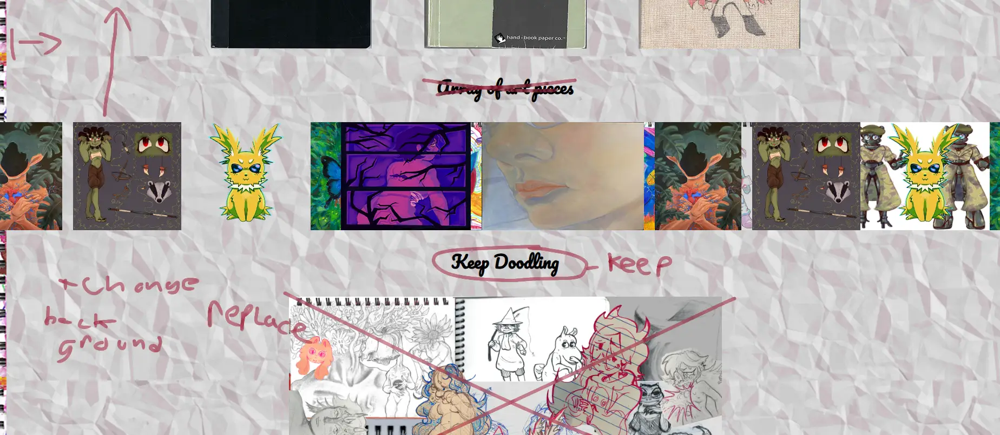

Final Project Report
The people who critiqued my work were Sky and Tanujia Mishra, my DES191B “New Frontiers with Generative AI” Professor.
The journal and slides were the strongest elements of my design page. The headers and content of the text were all complemented on. However, all of these can be improved upon. I received feedback from both Sky and Professor Tanuja that there could be more journals to explore and click on. Professor Tanuja noted that the exit button on the journal should either be more visible or I should program it so when you click out of the “space” the journal is on, there appears the journal overlay. They also pointed out that more papers in each individual journal would also add a more personal touch. The text in these journals should be bigger and more interactive. Maybe adding a tidbit of knowledge to certain pages. I was told the gallery slide is nice but that it should be moved to the top so it does not break up the flow of the page. I'll remove the zoom in image at the end of page and try put that function in some of my journals or make that collage the background to my site.
